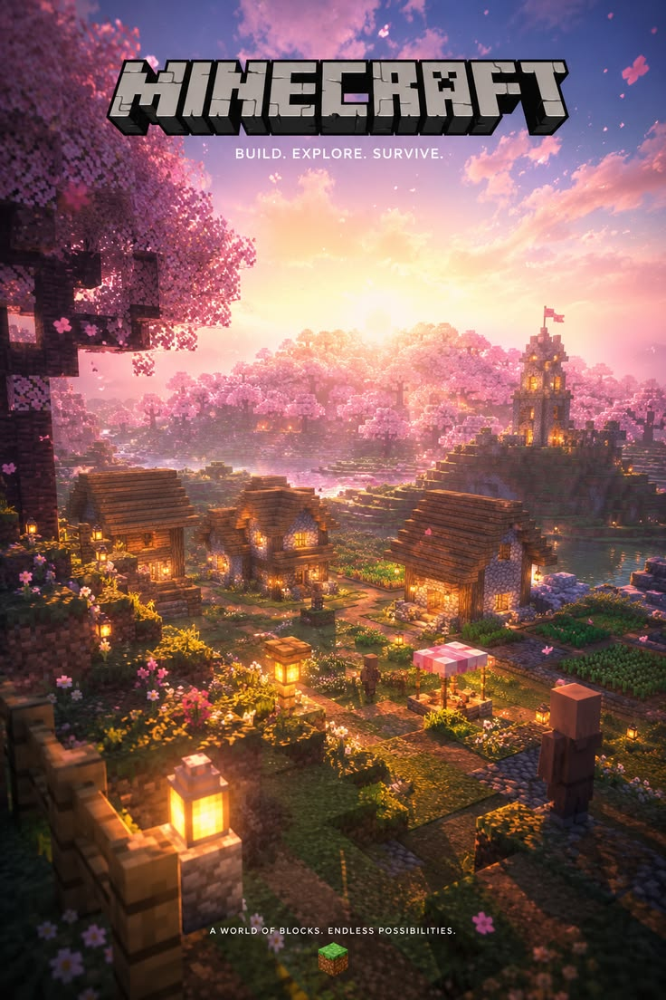
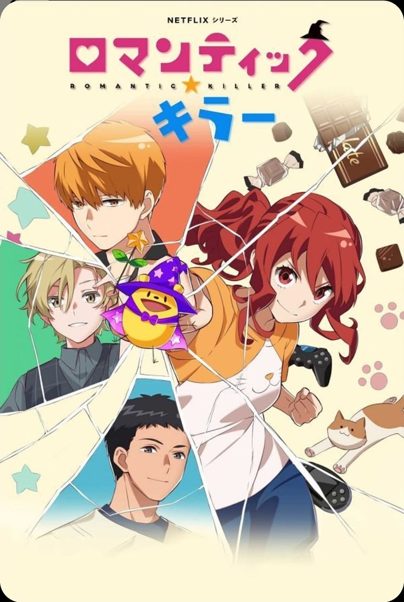
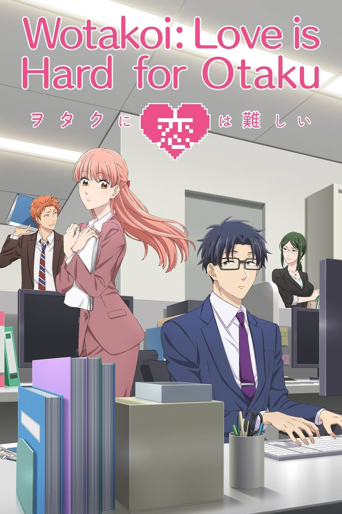

Stardew Valley

Gosto muito do ambiente aconchegante do jogo, de cuidar da fazenda, criar animais e interagir com os moradores da vila.
ABC Bolinhas · Perfil de integrante
Os universos virtuais, imagens e histórias que mais curto acompanhar.
Alguns dos jogos que mais me divertem e me prendem.
Gosto muito do ambiente aconchegante do jogo, de cuidar da fazenda, criar animais e interagir com os moradores da vila.

Adoro a liberdade criativa de construir bloco a bloco, explorar cavernas, sobreviver e jogar junto com amigos.

Incrível pela narrativa profunda, personagens marcantes e a ambientação pós-apocalíptica envolvente.
Aprecio animes com boas histórias, personagens marcantes e cenários bem detalhados.




Histórias que me prendem do início ao fim, com personagens que eu acompanho com carinho.